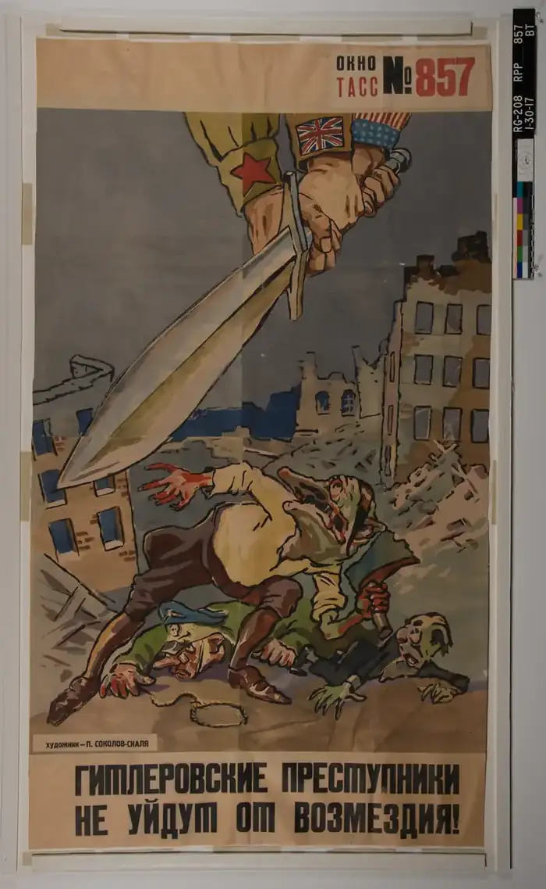
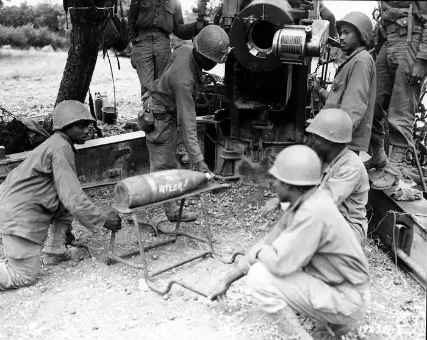

What is documented
By late April 1945 the Red Army was in Berlin. Hitler married Eva Braun on 29 April, dictated a will, and died on 30 April in the Führerbunker. The bodies were carried outside, burned in a shell crater, and buried nearby.
Maps, diagrams and images




Soviet forces found the remains within days. The identification rested on dental work: Hitler's dentist and his assistant were located and reconstructed his bridge and teeth from memory and X-rays, and the match was accepted in a Soviet report of 1945. The jawbone and a skull fragment were retained.
In 1970 the remains were exhumed again and destroyed, with the jawbone kept in Moscow. In 2009 a DNA study of the skull fragment found it belonged to a woman, and was probably not Hitler's — a genuine correction that conspiracy writers seized on. It changes nothing about the dental identification, which is the actual evidence.
The escape story
The strong version: Hitler and Braun left Berlin in the last days, travelled via U-boat (or aircraft to Spain, then by ship) to Argentina, and lived quietly, with sightings reported for decades. A 2018 book by a journalist and a 2022 History Channel series repeated versions of it.
Supporting claims typically include: the FBI investigated and its files are "proof" (they are records of tips, not findings), Argentina's postwar tolerance of Nazis (real, and well documented), and the confusion of the final days (also real).
The identification is dental, and it was corroborated twice. Two independent dentists reconstructed his unusual bridgework from memory and from X-rays; the recovered jaw matched. That is strong forensic evidence, and it was obtained by people with every incentive to be certain.
The route is not physically plausible. Berlin was encircled; the airfields were under fire; the harbour exits were watched. Getting a recognisable dictator and his companion out through that, then across an ocean, would require a level of coordination that left no trace in Allied signals intelligence — which was reading a great deal of German traffic in 1945.
Submarine veterans kept records. The U-boat force's movements in May 1945 are documented by both sides, including the surrender operations. No unexplained long-range voyage appears.
No positive evidence exists. Decades of searches, including Argentine and Brazilian police work, produced no documents, graves or confirmed associates. The claim is maintained by anomalies, not by finds — the same structure as Oak Island.
Why it persists
Two reasons, both worth naming. First, the war's end was genuinely chaotic, and the Western Allies had an interest in not publicising a Soviet identification they could not verify — a gap that invites speculation. Second, the escape narrative is a way of refusing closure on a figure people would prefer to imagine still standing trial.
The comparison is with the Anastasia case: in both, a story about a survivor outlived the forensic identification of the remains, and in both, DNA ended the question for anyone willing to read it.
Sources for this page
- Wikipedia, “Death of Adolf Hitler” — dental identification, Soviet exhumation, 2009 DNA studyen.wikipedia.org
- FBI Vault — declassified files on reported Hitler sightingsfbi.gov
- US National Archives, captured German records and U-boat war diariesarchives.gov
- The Guardian, “Hitler's skull fragment 'is a woman's'” (2009)theguardian.com
Open resources on this topic
- PapersOpen-access articles: DOAJ · PubMed Central · Internet Archive Scholar
- BooksPublic-domain and borrowable copies: Open Library · Project Gutenberg · Google Books · Internet Archive
Cite this page
Momin, S. (2026). Did Hitler Escape?. The Larger World Archive. https://drsamonline.github.io/LARGE_GLOBE/hitler-escape.htmlMomin, Sohil. “Did Hitler Escape?.” The Larger World Archive, 2026, https://drsamonline.github.io/LARGE_GLOBE/hitler-escape.html.Momin, Sohil. “Did Hitler Escape?.” The Larger World Archive, 2026. https://drsamonline.github.io/LARGE_GLOBE/hitler-escape.html.@misc{did2026hitler,
author = {Momin, Sohil},
title = {Did Hitler Escape?},
year = {2026},
howpublished = {The Larger World Archive},
url = {https://drsamonline.github.io/LARGE_GLOBE/hitler-escape.html},
note = {Last reviewed 20 November 2026}
}Last reviewed 20 November 2026 · Corrections policy · this page is not peer reviewed